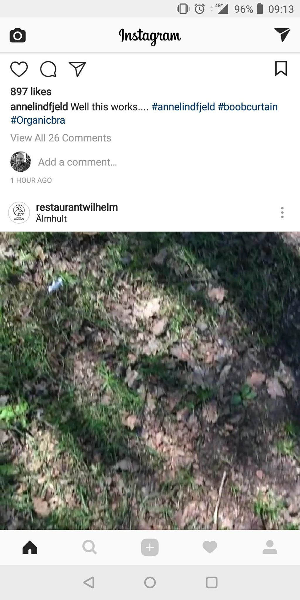
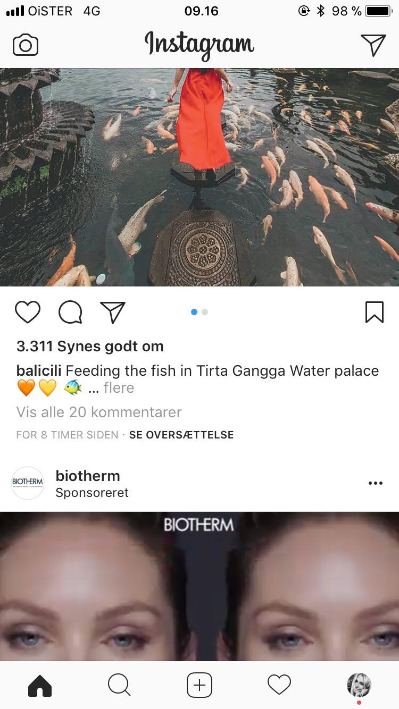

Features Funtionaliteter
Touch Design øvelse
Phone features:
Brugssituation:
Udforsk/spil: man bliver hutigt fanget af Instagram, hvor man bare scroller derud af. Bruges særligt når vi keder, meget hurtig og nemt underholdning lige ved hånden.
Check-in/status: Man kan følge profiler og følges med i deres liv overalt hver dag.
Rediger/opret: Man kan oprette og altid redigere billeder med content til ens profil, derudover er det også muligt at planlægge opdag.
Brugskontektst:
Instagram bruges hurtigt ind i mellem hele dagen, men tjekker mange gange om der er sket noget nyt på en dag. Bruges ofte hurtigt til at vise omverdenen hvad man laver/spiser, og se hvad andre laver. Dog bruges den særligt ved lejligeder hvor man keder sig og venter, f.eks. i bussen/i venteværelset ved lægen osv.
Android/Iphone
På billederne oven over, ses tydeligt at det er præcis de samme features på begge enheder, og de er placeret på helt samme sted. Det er kun designet af ikonerne der er anderledes, hvor Iphones ikon-design er mere minimalistisk. Androids menu-bar kan også ses i bunden (som man kan i alle Apps på Android).
AOF
Aktiviteter: man kan poste billeder og film, lave stories (billede, video og live), kigge på andre profiler, like, kommenterer opslag, sende privat-billeder, sende privat-beskeder (DM), oprette virksomhedsprofil for brand og promovere, betale for annoncer/reklamer, linke via. story, links til produkter man kan købe.
Objekter: dele nyheder/updates, komme i kontakt med andre profiler, like, "pleje" ens egen profil.
Features: dele et billede/film, bruge filter, redigere billede, tagge folk, vise lokation, skrive content til billede, skrive kommentar, repost andres billeder/film.
Features creep: evt. begyndende feature creep, da der hele tiden kommer mange nye ting... F.eks. har vi lige set at man nu kan købe produkter via. Instagram. De skal passe på App'en ikke ligepludselig bliver noget andet.